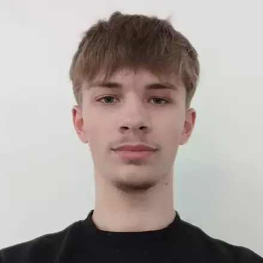

À propos de moi
Je m'appelle Sasha Lorenc, développeur passionné par l'informatique et le design. Je cherche constamment à apprendre et à m'améliorer. En tant qu'étudiant en Première année de BUT Informatique passionné par le développement web, je maîtrise les langages HTML, CSS, me permettant la création d'applications web. J'apprécie également le développement d'applications bureau avec des langages tels que le C,C++. Mon adaptabilité me permet de relever les défis techniques en combinant mes compétences techniques, incluant des connaissances en frameworks, je suis capable de transformer des concepts en applications web de manière professionnelle. Pour la rentrée 2025, je suis à la recherche d'une alternance dans le domaine du développement web ou autre.
Mon parcours
Je suis actuellement étudiant en BUT Informatique à l'IUT de Clermont-Ferrand. Avant cela, j'ai obtenu mon baccalauréat avec les spécialités NSI (Numérique et Sciences Informatiques) et Mathématiques au lycée Albert Londres à Cusset. Durant mon parcours lycéen, j'ai eu l'opportunité exceptionnelle de participer à un projet innovant en partenariat avec Samsung dans le cadre du programme "Solve for Tomorrow". Notre équipe a fait partie des 5 groupes sélectionnés parmi plus d'un millier de groupes en France pour présenter notre projet devant un jury à Paris, une expérience enrichissante qui a renforcé mes compétences en gestion de projet ainsi qu'en expression orale.
Ce qui me motive
J'aime créer des interfaces intuitives et esthétiques, et je cherche à rendre chaque projet innovant et unique pour permettre aux sites que je crée d'être facilement identifiables par leurs utilisateurs.